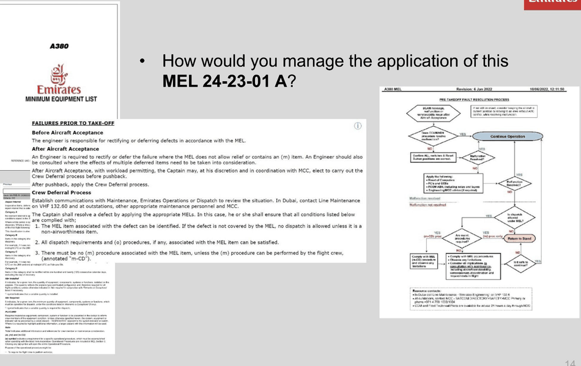
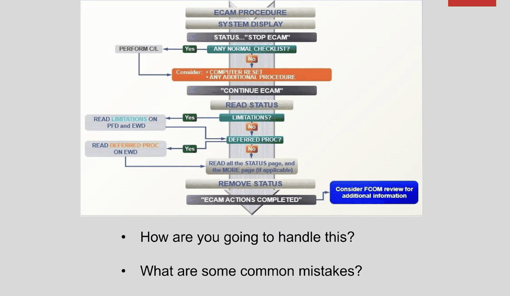
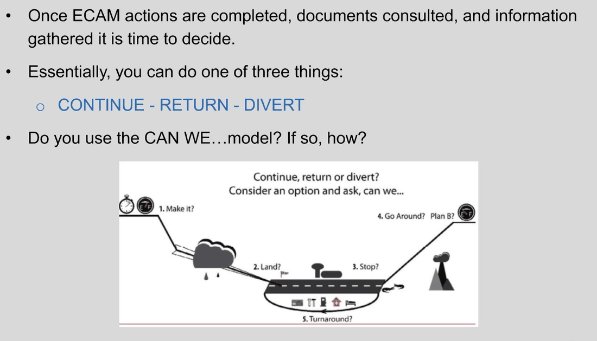
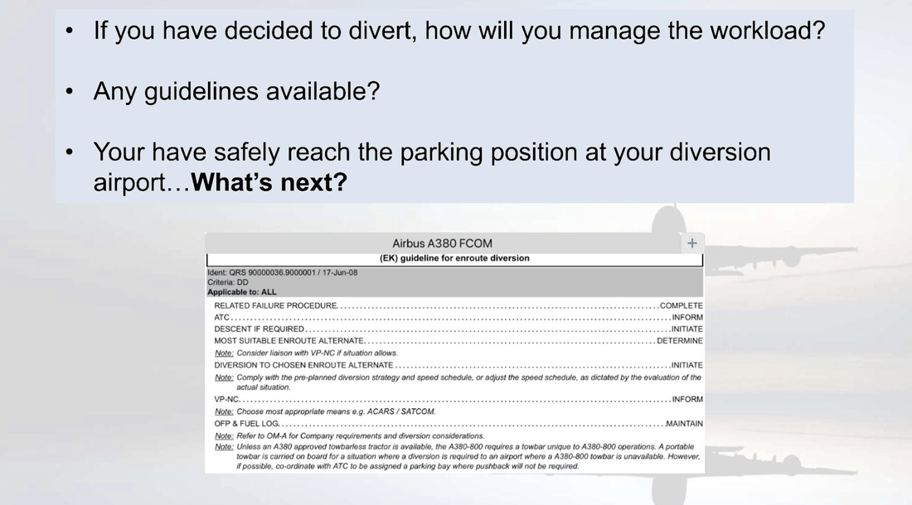
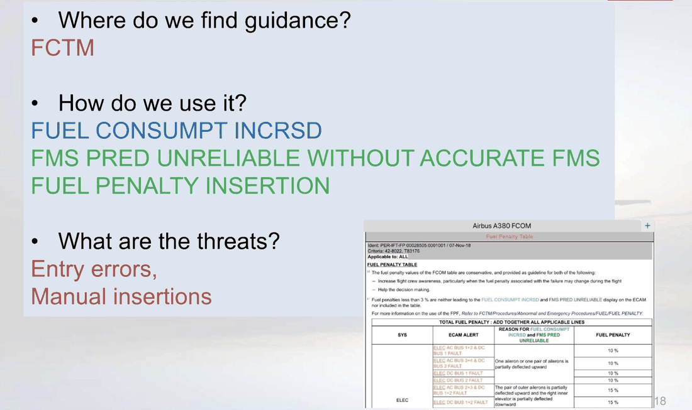
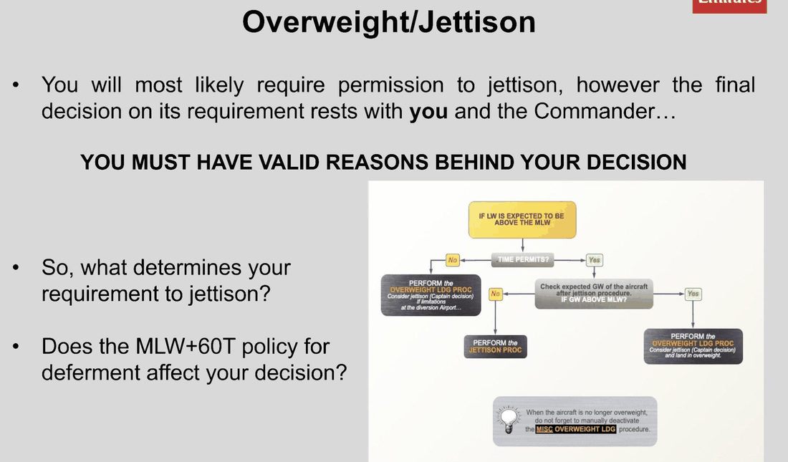
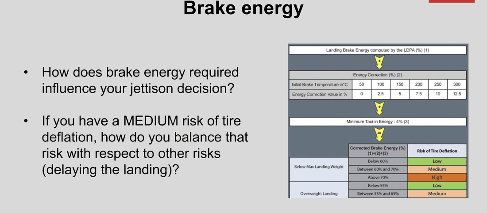

Source: A380 Training Manual, Chapter 2, §2.10 — Command Management 1U
Resource
FFS
Aim
This training session is conducted in a LOS context and integrated with the CRM Workshop attended at the start of the course. This phase of Command Management training is designed and presented to focus specifically on the enhancement of Command skills and expertise.
Irrespective of the tools or techniques used, Commanders are required to develop robust and repeatable problem solving and decision-making skills. Trainers will provide structure and guidance throughout.
This training session requires interactive trainer input and facilitation to train and develop resilience skills for management of non-time-critical events. As the trainee becomes more comfortable managing these events, communication and leadership skills should be enhanced.
This is a flight from VHHH to OMDB. The scenarios require management of non time-critical events of low to medium context complexity. Context complexity refers to the combined difficulty of operational and environmental contexts resulting in a skill level required to manage the events. This combination of operational and environmental contexts is not intended to create a technical or operational conundrum that produces negative training results. The scenarios consist of events that are selected to train competencies.
As soon as the problem-solving process is completed, and a continue/divert/return decision made, the scenario is completed. Faults will be reset if applicable, and the training moved forward to the next scenario. At the end of the training session the trainee will understand the nature of non-time critical scenarios, and the skills required to manage them. As this training phase is intended as LOS preparation, LOS design elements are included. For that purpose, no weather reports are provided as the trainer would be required to prepare the details according to how he or she plans the scenario to evolve. It is recommended that the trainer keeps printed ACARS weather reports handy to be used by the crew when asked. The flight plan and loadsheet provided contain only the information relevant for the session, hence they are abbreviated versions.
Objectives
- Consolidate flight path control in Abnormal/Non-normal configurations.
- Demonstrate a high degree of procedural knowledge and application.
- Practice workload management to maintain situational awareness.
- Practice Threat and Error Management.
- Practice decision making.
- Practice communication skills.
- Practice leadership and teamwork.
Trainer Guidance
This is the first time that a line First Officer will be required as support pilot for a training session.
Command trainees must develop a robust event management process that is consistent, repeatable, and useable during management of both familiar and unfamiliar problems. It is important to emphasise to the trainee that the introduced events are just a vehicle to train and develop command skills and confidence, in an integrated way. One of the required competencies for a commander is the ability to implement an effective problem-solving process. Thus, resulting in an increased confidence that removes the reliance or pressure of knowing “the right answer”.
The session consists of non time-critical malfunctions/scenarios specified in the Session Guidance introduced during different flight phases. These malfunctions/scenarios will be at the trainer’s discretion and selected from the list provided. These must be reset after the decision-making process is complete or as dictated in the Session Guide. Depending on time available, the instructor may allow the scenario to progress through to a natural conclusion.
A performance-based competency enhancement and assessment process reinforces consistency through the observation of behaviours such as:
- Recognising problems and previous experience managing those problems.
- Protecting the flight path on the ground and in the air.
- Applying procedures related to the problem.
- Employing the 5D concept to manage workload and protect Situational Awareness.
- Understanding the big picture, the level of risk and the time available.
- Making an optimal (safe and efficient) decision based on the identified level of risk and time available.
- Using the “Can We?” model along with a proper risk assessment (Should We?) to decide whether to continue/divert/return.
Although the session involves repositions, the training scenarios should be conducted as a LOS with the advantage that the trainee knows which events will be introduced along with the nature of the failure (non time-critical). This will move away from a prepared decision outcome and train the decision-making process in real-time. The support pilot is expected to participate to a competent standard. The trainer must manage the level of support pilot direction/coaching and provide an appropriate level of intervention and guidance to the Command trainee to help achieve the objectives. Appropriate realism will maximise the training benefit.
The trainee must be trained, and therefore increase confidence, to recognise what different levels of risk “look” like, and how the time, range, and options affect risk assessment. An increased awareness and confidence will reduce the pressure of uncertainty on the trainee and will result in more effective decision-making. Thunderstorm activity, purser calls, and similar “distractions” should be used to add tasks, and therefore workload, requiring additional management as the crew become more proficient.
During the orientation and the application, the focus should be on the resilient (soft skills) competencies (M, S, D, C, L). The malfunctions chosen by the trainer will be introduced during the orientation and the decision-making process discussed. The discussion should not present an action plan to be performed in the simulator, rather it should be a discussion of options, risk assessment and decision process. The final decision and process used should be applied by the trainee in the simulator, utilising the benefit of prior discussion in the orientation and trainer facilitation. The orientation should also be used to facilitate an improvement of the process used, the application and recognition of the workload involved, and information gathering techniques which will improve the decision-making process during the various situations.
The trainer should use techniques with caution and clarity, as they could lead to trainee bias just to “please the trainer”. An open mind should be retained throughout allowing the formation of a robust process within the trainee.
eTAGS: Events utilised in this session should be listed in the Overall Comments to avoid trainers repeating events in subsequent sessions.
Orientation
| Phase | Time | Content |
|---|
| Introduction | 00:10 | Standard |
| Content | 01:40 |
New Topics
- Pre-flight Preparation
- Distraction Management.
- Discuss Engine Start Malfunction.
- No memory items, but urgency might be required,
- PF/PM CM1/CM2 roles and expectations.
Non-normal Management
This part of the orientation should be following the SOAR principle, the trainees will have studied the list of the malfunctions and will know the technical details.
The focus during the orientation should be on the resilient skills (S, D, M, L, C) and the process of handling events and highlighting the decision making in a non-time-critical situation (rational decision making).
The malfunctions chosen for the scenarios during the orientation should be ones used in the simulator (application).
Building/Review Topics
As determined by the trainer according to scenarios chosen.
|
| Preparation | 00:10 |
Charts Required
- OFP Briefing
- Performance calculations
- Loadsheet verification
- Departure Briefing
- Device Safety Brief
|
| Break | 00:10 | — |
Application Data
Aircraft
| Flt Nbr | UAE381 |
|---|
| From | VHHH |
|---|
| To | OMDB |
|---|
| Altn | OMDW |
|---|
| FL | 380 |
|---|
| CI | 34 |
|---|
| Crz Temp | -46 |
|---|
| Tropo | 53212 |
|---|
| Trans | 5000’ |
|---|
| ZFW/CG | 359.4T/33.0% |
|---|
| Fuel | 112T |
|---|
| Pax | 400 |
|---|
| TOW | 469.9T |
|---|
| A/Cond | ON |
|---|
| A/Ice | OFF |
|---|
ATIS
| Info | A |
|---|
| Rwy | 16 |
|---|
| Wind | 150/20 |
|---|
| Vis | 2000 |
|---|
| Cloud | OVC008 |
|---|
| Temp/Dew | 35/19 |
|---|
| QNH/QFE | 1000 |
|---|
| Rwy Cond | WET |
|---|
Position Set
| Arpt | VHHH |
|---|
| Rwy | 07R |
|---|
| Start Pos | STAND N66 |
|---|
FMS
| Fpln | VHHH 07R PECAN SID-OMDB 30L IMPED STAR |
|---|
| Sec1 | — |
|---|
| Sec2 | — |
|---|
| Sec3 | — |
|---|
Sim
| Day/Night | DAY |
|---|
| Rwy Cond | DRY |
|---|
| Turb | LOW |
|---|
| Cloud Base | – |
|---|
| Lights | – |
|---|
| FCU Alt | – |
|---|
| Storm 1 | 20 NM E OF AIRPORT |
|---|
| Storm 2 | – |
|---|
| Comments | – |
|---|
Performance
| Eng | TOW | Rwy | Flex | V1 | VR | V2 | Acc | Flaps |
|---|
| EA | 469.9T | 07R | 57 | 140 | 161 | 167 | 1218 | 1+F |
| RR | 469.9T | 07R | 58 | 139 | 160 | 166 | 1218 | 1+F |
EOP: ADCT TO HKEO1(N22 20.7 E114 02.2) AT HKEO1 RIGHT DCT RAMEN
Session Summary
| Time | Item | Title |
|---|
| 00:10 | 1 | COCPIT PREPARATION |
| 00:40 | 2 | TAXI “On Ground” EVENT |
| 01:00 | 3 | TAKE OFF/CLIMB + “Pre-select” EVENT |
| 01:20 | 4 | CRUISE + “Pre-select” EVENT |
| 02:05 | 5 | APPROACH/LANDING SCENARIO |
| 02:45 | 6 | PRACTICE LANDING X-WIND 30 KT |
| — | — | SESSION END |
Application — Debrief Walkthrough
Item 1COCKPIT PREPARATIONElapsed 00:10 · Event 00:30
APFDATHRFPV
- The crew have already reviewed the OFP/BRIEFING prior to entering cockpit.
- The dispatcher advises of departure slot time (current time + 25 (-5 + 10)).
- Introduce minor distractions – Pax issue, DEPU, pregnant pax, oversize baggage etc.
- Coordinate with ground crew for start.
Item 2TAXI + “On Ground” EVENTElapsed 00:40 · Event 00:20
APFDATHRFPV
- PUSH BACK completed.
- Trainer to select QUICK ENG START and complete the AFTER START checklist.
- TAXI to HOLDING point RWY 07R.
- Insert one of the following:
- FWS 1+2 FAULT. RESET recovers FWS 1, MEL for FWS 2
- FUEL PUMP FAULT (OUTER/MID/INNER)
- ANTI-ICE CTRL FAULT
- TR2A FAULT
- F/CTL SLATS/FLAPS FAULT
- Note: The Trainer must manage the level of support /direction/coaching and provide an appropriate level of intervention and guidance to the Command trainee to help achieve the objectives. Appropriate realism will maximise the training benefit.
- As soon as the problem-solving process is completed, and a continue/return decision made, the scenario is completed.
- Once a decision has been made, CLR MALF and reposition to Holding Point 07R.
- MEL preamble — failures prior to take-off: apply the FNC model — F by stopping the taxi, N by confirming position on the taxiway, C by advising ATC then other stakeholders if required.
- Guidance and resources for a failure prior to take-off: FCOM, the MEL, CM2, MCC, and Tech Pilots.
- A failure or system degradation before door closure has to be rectified, or an ADD raised. Before Aircraft Acceptance: the engineer is responsible for rectifying or deferring defects in accordance with the MEL. After Aircraft Acceptance: an engineer is required to rectify or defer the failure where the MEL does not allow relief or contains an (m) item; an engineer should also be consulted where the effects of multiple deferred items need to be considered. With workload permitting, the Captain may, at his or her discretion and in coordination with MCC, elect to carry out the Crew Deferral process before pushback; after pushback, apply the Crew Deferral process.
- Crew Deferral process: establish communications with Maintenance, Emirates Operations, or Dispatch to review the situation (in Dubai, Line Maintenance on VHF 132.60; at outstations, other appropriate maintenance personnel and MCC). The Captain shall resolve a defect by applying the appropriate MEL, ensuring: (1) the MEL item associated with the defect can be identified — if the defect is not covered by the MEL, no dispatch is allowed unless it is a non-airworthiness item; (2) all dispatch requirements and (o) procedures, if any, are satisfied; and (3) there is no (m) procedure associated with the MEL item, unless it can be performed by the flight crew (annotated “m-CD”).
- Common mistakes: skipping steps, or performing them out of order.


Item 3TAKE OFF/CLIMB + “Pre-Select” EVENTElapsed 01:00 · Event 00:20
APFDATHRFPV
- Select SIM SOFT SAVE prior to take-off.
- After take-off, insert one of the following:
- ENG FIRE extinguished 1st BTL
- SMOKE LAVATORY
- FMS 1+2 FAULT
- DC1 BUS FAULT
- F/CTL SLATS/FLAPS LOCKED
- PRIM 2+3 FAULT (No reset)
- AUTO FLT A/THR OFF (not recoverable, no USE of FCU-backup)
- FUEL LEAK
- SICK PAX – NOT CRITICAL
- ATC AIRSPACE CLOSURE
- Note: The trainer must manage the level of support /direction/coaching and provide an appropriate level of intervention and guidance to the Command trainee to help achieve the objectives. Appropriate realism will maximise the training benefit.
- As soon as the problem-solving process is completed, and a continue/divert/return decision made, the scenario is completed.
- If time available, and a return decision was taken, the trainer may allow the scenario to progress through to a landing.
- Once a decision has been made, CLR MALF.
- Once ECAM actions are completed, documents consulted, and information gathered, it is time to decide: continue, return, or divert.
- Apply the “Can We?” model when weighing the options — 1. Make it? 2. Land? 3. Stop? 4. Go-around/Plan B? 5. Turnaround? — considering fuel, weather, landing distance performance (LDPA), overweight, and any special conditions.

Item 4CRUISE + “Pre-Select” EVENTElapsed 01:20 · Event 00:45
APFDATHRFPV
- REPOS: FL390, AKSAG N20 49.0 E100 28.0 to MDY
- Fuel 70.8T – ZFW 359.4T
- Insert one of the following:
- ENG FIRE extinguished 1st BTL
- SMOKE LAVATORY
- FMS 1+2 FAULT
- DC1 BUS FAULT
- PRIM 2+3 FAULT (No reset)
- AUTO FLT A/THR OFF (not recoverable no USE of FCU-backup)
- FUEL LEAK
- SICK PAX NOT CRITICAL
- ATC AIRSPACE CLOSURE
- Allow sufficient time to build SA of systems, position, and alternate airport options.
- Note: The trainer must manage the level of support /direction/coaching and provide an appropriate level of intervention and guidance to the Command trainee to help achieve the objectives. Appropriate realism will maximise the training benefit.
- As soon as the problem-solving process is completed, and a continue/divert/return decision made, the scenario is completed.
- If time available, the trainer may allow the scenario to progress through to a landing.
- Alternate options must be realistic given that the scenario is not time critical.
- Once decision has been made, CLR MALF.
- If diverting, activate the alternate, hand control to CM2, then manage the situation.
- Refer to the FCOM (EK) guideline for en-route diversion: complete the related failure procedure, inform ATC, initiate descent if required, determine the most suitable en-route alternate (consider liaison with VP-NC if the situation allows), initiate diversion to the chosen alternate, inform VP-NC (choose the most appropriate means, e.g. ACARS/SATCOM), and maintain the OFP and fuel log (refer to OM-A for company requirements and diversion considerations).
- Consider FTL, a new flight plan, fuel, tech log, and loadsheet, as well as layover/hotel arrangements for passengers and crew.
- Fuel guidance: refer to the FCTM fuel penalty table. A FUEL CONSUMPT INCRSD or FMS PRED UNRELIABLE indication means the FMS fuel predictions are unreliable without an accurate manual fuel penalty insertion — threats include entry errors and manual insertions.


Item 5APPROACH/LANDING SCENARIOElapsed 02:05 · Event 00:40
APFDATHRFPV
- REPOS: Intercept 12 NM OMDB RNP RWY 30L
- Fuel 14T – ZFW 359.4T
- Conditions: 210/30 OVC010 25/15 1010
- Insert:
- NAV PRIMARY LOST + NAV ACCURACY LOW
- GPS Jamming resulting in loss of GPS signal and navigation accuracy downgrade below minimum required for flight in current airspace or to fly SID/STAR approach.
- L/G GEAR NOT LOCKED DOWN (gravity extension successful)
- F/CTL SLATS/FLAPS LOCKED
- HYD Y SYS PRESS LO
- ONE RWY CLOSURE
- AIRPORT CLOSURE
- GPWS PULL-UP in IMC during ILS intercept.*
- Note: * Although this malfunction requires an immediate and conditional reaction, the problem-solving challenge once clear of terrain provides an interesting discussion of options and risks.
- Allow sufficient time to build SA of systems, position, and alternate airport options.
- Note: The trainer must manage the level of support/direction/coaching and provide an appropriate level of intervention and guidance to the Command trainee to help achieve the objectives. Appropriate realism will maximise the training benefit.
- Alternate/Destination options must be realistic given the not time critical scenario.
- If time available, the trainer may allow the scenario to progress through to a natural conclusion.
- Performance: consider LDPA and weather conditions that risk turbulence.
- Fuel jettison decision: if time is not available, land anyway; if time is available, coordinate with NCC and ATC to carry out the jettison. If time is available and performance is restricted, prefer jettison; if performance is not restricted, use the full runway length and reduce brake energy without jettison.
- Overweight/jettison: permission to jettison is normally required, but the final decision rests with the Captain and Commander — there must be valid reasons behind the decision. If the landing weight is expected to be above MLW and time permits, check the expected gross weight after the jettison procedure: if still above MLW, perform the jettison procedure; if not, perform the overweight landing procedure (consider jettison as a Captain’s decision, particularly if limited by conditions at the diversion airport). When the aircraft is no longer overweight, remember to manually deactivate the MISC OVERWEIGHT LDG procedure.
- Brake energy: options to reduce it include full reverse, BTV, and landing on a longer runway, preferably into a headwind — all depending on time available. A corrected brake energy above 70% (below MLW) or above 65% (overweight landing) carries a high risk of tire deflation.


Item 6PRACTICE LANDING X-WIND 30 KTElapsed 02:45 · Event 00:10
APFDATHRFPV
- REPOS: OMDB 3 NM, ILS RWY 30L
- WIND: 210/30, TURB 20%.
- Consolidate 30 kt XWIND landings.
Reflection
Facilitate trainee to reflect on the session’s objectives, and whether these were met or not.